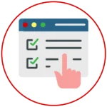
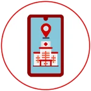
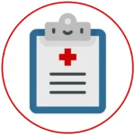
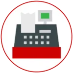

AVIAT Telemedis
Aplikasi telemedis ini kami buat untuk membantu rumah sakit dalam menjalankan layanan kesehatan bagi masyarakat umum. Kemudian dari sisi pasien akan dapat dengan mudah mengakses segala informasi yang dibutuhkan. Selain itu, untuk pihak manajemen rumah sakit dapat melakukan evaluasi terhadap dokter dengan feedback yang diberikan oleh rumah sakit. Aplikasi ini akan sangat membantu baik untuk pihak rumah sakit dan dokter maupun untuk pasien.

Fitur Utama AVIAT Telemedis
1. Pendaftaran Konsultasi Melalui Aplikasi
 User pasien dapat melakukan booking konsultasi dengan dokter di rumah sakit tanpa harus datang ke rumah sakit.
2. Telekonsultasi dengan Dokter
 Untuk pasien yang tidak bisa datang langsung karena suatu halangan, pasien bisa melakukan konsultasi langsung secara daring melalui aplikasi kami.
3. Berita dan Informasi Terkait Terkini
User pasien dapat melakukan booking konsultasi dengan dokter di rumah sakit tanpa harus datang ke rumah sakit.
4. Penilaian Kinerja Dokter Terhadap Pasien
User pasien dapat melakukan booking konsultasi dengan dokter di rumah sakit tanpa harus datang ke rumah sakit.
5. Riwayat Pasien
 User pasien dapat melakukan booking konsultasi dengan dokter di rumah sakit tanpa harus datang ke rumah sakit.
6. Metode Pembayaran yang Beragam
 User pasien dapat melakukan booking konsultasi dengan dokter di rumah sakit tanpa harus datang ke rumah sakit.